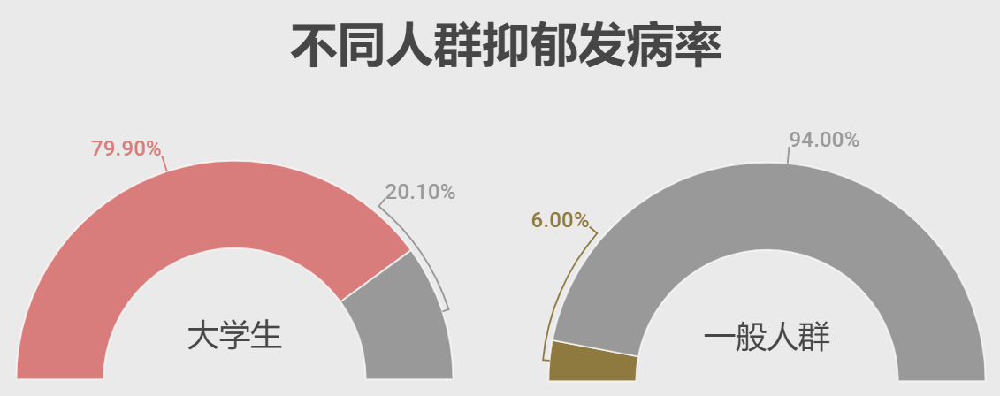

数据告诉你：大学生抑郁现状
全球共同面临的健康难题01
2017年的世界卫生日，主题聚焦于一个常被人忽视的问题——抑郁症。据世界卫生组织最新统计的数据显示，全球抑郁症患者约有3.5亿人，近十年患者增速约为18%，占全球人口的4.4%。世界卫生组织、世界银行和哈佛大学的一项联合研究表明，抑郁症已经成为导致全球疾病负担的第二大因素。
梵高、海明威、三毛、张国荣……这些在各自领域大放异彩的人，因为抑郁症这只如影随形的“大黑狗”，他们选择结束了自己的生命，给世界留下了无尽的惋惜和遗憾。
《房思琪的初恋乐园》作者林奕含在婚礼的演讲中说道：
“我失去了快乐这个能力，就像有人失去了他的眼睛，然后再也拿不回来一样。但与其说是快乐，说的更准确一点是热情。我失去了吃东西的热情，我失去了与人交际的热情。以至于到最后我失去了对生命的热情。”
每个人都可能短暂的对生活丧失热情，这是因为产生了一种很常见的情感成分——抑郁情绪。
但病理性抑郁症可使患者对前途悲观，对生活没信心和目标，思维和记忆力下降，社会功能受损，如影响学习和工作等。有轻生的倾向，严重时会导致患者自杀。据估计，全球每年自杀死亡人数高达100万人。世界卫生组织精神健康与药物滥用司司长萨克斯纳此前表示：
“抑郁症与自杀有着非常明显的联系。抑郁症不是引起自杀的唯一原因，但抑郁症是导致自杀的主要原因。因自杀死亡的人中约50%患有抑郁症。”
大学生心理健康杀手02
抑郁症可发作于任何年龄段，在其中大学生抑郁的情况日益严重。据数据统计，2009年至2017年，18岁至25岁的年轻人中，重度抑郁症发作率增加了63%。
在海口一家商场的咖啡厅里，醇香的咖啡气味在空中弥漫，一名长发的年轻女孩坐在沙发里，声音轻柔，脸上带着微微的笑意。
“大二的时候，我患了中度抑郁症。”周妍今年是一名大四学生，两年前，她确诊了抑郁症。谈及这些，她的脸上没有悲伤的表情，神色轻松，但手臂上交错的褐色疤痕讲述着这个姑娘经历的种种。
在中国大学生中，隐匿着许多“周妍”，默默地与抑郁症做着艰难的抗争。。世界卫生组织的调查表明，1/4的中国大学生承认有过抑郁症状。叶庆红, 陈志斌等人的研究发现，大学生抑郁发生率高于一般人群，我国大学生抑郁发生率为13.25%~79.90%，而一般人群仅为5%~6%。
叶女士的女儿在大一时确诊了抑郁症。“有一天她突然给我发消息，‘我不想活着了，对不起妈妈’。”叶女士哭了一晚，第二天赶到学校，带着女儿去了医院，确诊中度以上抑郁。“她本来不愿意治病，现在好了一些，愿意治疗了，但有时候还是会背着我不吃药。”女儿目前休学在家，疗养效果反反复复。“好的时候会去和朋友聚会，和我去遛狗，看电视也会大声笑。坏的时候，一天不说话、不吃饭也是经常的事情。”
抑郁症的性别偏好03
世界卫生组织（WHO）2017年发布的《抑郁症及其他常见精神障碍》揭露了抑郁症关于性别的小秘密：女性发病率远远高于男性，发病率为5.1%，而男性发病率是3.6%。在中国，抑郁症患者的男女比例分别为35%和65%，女性患者占了六成以上。
接受调查的大学生反映了相同的情况：受访的1045人中，有484人检测出了不同程度的抑郁倾向，其中，女性为284人，男性为200人。
女性相比男性更容易遭受抑郁困扰，主要表现在以下几个方面：
1.生理特点：女性的抑郁症高发性与其生理特点有着密不可分的关系，在临床上有一类特殊的抑郁症称为月经期抑郁症。月经期、怀孕等生理状况，都有可能促使抑郁症的发生。
2.心绪敏感：女性的神经数量更多，敏感程度高于男性，面对外部的刺激更容易产生情感波动。
3.环境压力：在社会中，女性往往比男性更容易遭到压力事件，如隐藏的性别歧视，同时女性也更容易遭受侵害，如性骚扰甚至性侵等，这些都会使女性受到更多的创伤。
4.遗传易感性：遗传因素使女性患忧郁症几率增加了50%。近来研究发现,妇女染色体片段2p33～35的特定基因异常导致女性在早年就会发病，表现为反复发作的忧郁症。
多维度压力加剧抑郁倾向04
抑郁症的发病机制非常复杂，是涉及神经、内分泌、免疫等多方面的病理生理过程。抑郁症并没有明确的病因，遗传因素、成长环境、生活压力、其他身体疾病，都可能引发抑郁症。
虽然抑郁症的成因复杂，但都倾向于一个共同点——生活压力。这也是为什么抑郁症在35~49岁（占全国抑郁症患者的30%）和50~64岁（占全国抑郁症患者的37%）两个年龄段人群中高发的原因。
相较之下，大学生年龄段的年轻人们似乎没有那么大的精神压力，但抑郁症依然在暗处伺机而动。20岁出头的青少年们正在经历一个特别脆弱的时期，由于心智不成熟、抗压能力较弱，生活的压力和变故更容易压垮他们。
“等上了大学就轻松了。”这句话在高考前成为了激励不少学生的“名言”，然而现实却是一句无稽之谈。在大学更为广泛而复杂的天地里，大学生们需应对同龄人多维度的竞争，以及毕业后越来越严峻的就业形式，大学中的压力是多方面的。
在接受本次问卷调查的1045名大学生中，近五成的学生自测出有抑郁倾向。其中，大三、大四的学生有抑郁倾向和无明显症状比例基本持平。
在本次调查的受访者中，学业课程、就业压力是造成大学生们情绪不稳的主要原因，不同年级的大学生压力因素也有所不同。大一、大二、大三、硕士及以上的学生中，占据一位的压力因素是学业课程，而大四毕业生们排名最高的压力因素则是就业问题及职业生涯规划。
主动出击缓解情绪05
绝大多数学生在感受到压力时会采取行动主动缓解情绪。有近九成的学生会尝试解决，缓解办法也多种多样。其中五成以上的学生会采用“转移注意力”的方式缓解压力，暂时逃避目前遇到的困境，使自己的心绪好转起来。
大学生们在感到压力时并不会憋闷在心中，同学或朋友成为了他们倾诉的首选对象。有45%的学生表示会向同学和朋友倾诉以缓解压力。同龄人之间能更好的理解自己的感受，相似的身份和年纪能够给自己提供更加切实可行的建议，平级的关系交谈起来也更加舒适放松。
高校措施难以满足学生需求06
近些年心理疾病发生的频率不断上升，不少高校都开始重视起了学生的心理健康问题。专门的心理咨询室、定期的心理状态测试、开设网络沟通渠道，方便了与学生的沟通，学校虽然不能像专业医师那样进行诊断，但它成为了大学生抑郁筛查的第一道防线。
但学生对于学校的心理教育并不完全买账，《光明日报》的一项调查发现，高校学生对于心理健康教育表示“很满意”态度的比例约为35.6%，表示“不满意”态度的则有6.8%。
不同等级的高校对学生心理问题的处理能力也有着较大差距。在学生遇到心理问题需要帮助时，约有33.7%的一流大学建设高校能够及时提供帮助，而在独立学院，这一数字降至了11.1%。
光明日报2018的一项调查显示，高校心理健康教育专兼职教师的专业背景仅有30.7%为心理学，医学则为2.90%。
当谈及学校是否给予了帮助，周妍摇了摇头：“学校的心理老师只是跟我简单的谈了一下，建议我还是要去大医院看看，学校的老师也不是专业的，能给的帮助还是有限。”
就诊率普遍偏低07
抑郁症目前主要以抗抑郁药物治疗为主，辅以心理治疗或是物理治疗。近年来随着中国抑郁症患者的不断增加，我国抗抑郁药市场规模出现了较快的增长。根据公开数据显示，2011年-2018年我国抗抑郁药市场销售从29.3亿元增长至87亿元，今年预计将超过95亿元。
在广阔的市场背景下，中国目前的抑郁症就诊率依然偏低。中国目前抑郁症患者人数逾9000万人，但只有约8%的患者接受了治疗，绝大部分的患者并没有得到及时、正规的治疗。
从客观层面上看，抑郁症就诊率偏低与我国的心理医疗行业状况有关。我国心理医疗就业人数比例低下，专业的心理医疗从业人员增长速度远不及患者增加的速度。2014年，中国约有2.3万名精神科医生，也就是每10万人只有1.7名医生，而在俄罗斯和美国，每10万人分别有11到12名精神科医生。
除此之外，患者对就医持有恐惧心理、社会对抑郁症普遍存在着严重误解等情况的加剧，是造成这一现象的重要主观因素之一。
拯救先需“去污名化”08
“承受能力太差了吧。”
“年纪轻轻怎么可能得抑郁症？”
“他有抑郁症，那他不就是精神病？”
很多时候，压倒抑郁症患者的可能不是疾病本身，而是旁人的无知。旁人对于抑郁症的误解，是许多抑郁症患者不敢倾诉、不敢就诊的原因。
怕被人嘲笑无病呻吟，被人歧视，他们将抑郁症当做一种耻辱，将患病的过错揽到自己身上。更多抑郁症患者习惯了将微笑的面具戴在脸上，让别人看不见笑脸后的苦痛。
“别人都觉得我挺正常的，我妈看到我的伤口了，但是她也不说什么。”周妍指指自己手上的疤痕。“想哭的时候只能躲起来，怕被舍友看见觉得我烦人，朋友们说难受的时候就打电话给她，但是我不敢。”家人的漠视，同学的偏见，周妍在学校过的并不开心，也影响了病情。去年她多次请假回家休养，“在家过的比学校开心，一想到回学校就很沮丧，但是辛苦考的大学还是想拿到毕业证。”
网络的发达和普及，对抑郁症健康知识传播的力度增大，抑郁症的“去污名化”有了一定的效果。对于身边的大学生抑郁症患者，同龄人表现出了与刻板印象不同的包容态度。
在《中国青年网》的一项调查中，多数大学生表示了对抑郁症朋友的关怀。大多数的大学生对抑郁症患者抱有的是关怀的态度，愿意积极主动地帮助他们脱离困境。只有4.5%的人选择了“尽量和他/她少接触”。
“她只是暂时生病了，又不是好不了，我们在一起还是很愉快。”周妍的朋友陈艺说道，年轻的姑娘们聚在一起叽叽喳喳，笑语不断。“我们会一直陪着她的。”陈艺告诉记者。
“虽然不知道未来怎么样，但我是女儿的依靠，我会拉着她一直走。”叶女士说。
网络传播抑郁症知识优势明显09
中国互联网络信息中心（CNNIC）第43次《中国互联网络发展状况统计报告》显示，中国网民构成以中青年为主，截止到2018年底，20岁~39岁年龄段的网民占比最高，高达26.8%。互联网的普及与健康传播的发展，使得网络成为了大部分人获得抑郁症知识的主要来源。
在丁香医生和中国青年报联合的一项健康调查中发现，大学生了解健康知识的渠道主要来源于微信公众号、微博、抖音等网络渠道。网络、媒体报道、影视作品成为了大学生了解抑郁症的主要渠道。互联网在大学生对抑郁症认知程度上扮演着举足轻重的角色。
======= // 使用刚指定的配置项和数据显示图表。 myChart.setOption(option);在广阔的市场背景下，中国目前的抑郁症就诊率依然偏低。中国目前抑郁症患者人数逾9000万人，但只有约8%的患者接受了治疗，绝大部分的患者并没有得到及时、正规的治疗。
除了患者恐惧就医、社会对抑郁症的普遍误解等主观因素外，我国心理医疗就业人数比例低下也是一个重要的客观原因。2014年，中国约有2.3万名精神科医生，也就是每10万人只有1.7名医生，而在俄罗斯和美国，每10万人分别有11到12名精神科医生。专业的心理医疗从业人员增长的速度远及不上患者增加的速度。
>>>>>>> 486e6d8471115bb054d43d0aca4413bd4cac02a4国家政策利好抑郁防治10
近年来，我国陆续出台了许多关于公众精神健康的法律及政策，公共心理健康服务水平呈明显的上升趋势，在健全心理健康服务体系、搭建心理关爱服务平台、拓展心理健康服务领域、开展社会心理疏导和危机干预、建立专业化心理健康服务队伍等方面进行了积极探索，并且取得了一定的成效。
2013年5月,《中华人民共和国精神卫生法》正式实施，其中明确规定：政府、单位、家庭等都有“开展维护和增进公民心理健康、预防和治疗精神障碍、促进精神障碍患者康复活动”的义务和责任。
2016年出台的《国民经济和社会发展第十三个五年规划纲要》与《健康中国2030规划纲要》中确立了两个发展目标：到2020年，全民心理健康意识明显提高；到2030年，全民心理健康素养普遍提升。
2018年7月，教育部印发《高等学校学生心理健康教育指导纲要》，要求“健全心理危机预防和快速反应机制，建立学校、院系、班级、宿舍四级预警防控体系，完善心理危机干预工作预案，做好对心理危机学生的跟踪服务，注重做好特殊时期、不同季节的心理危机预防与干预工作。”
倡议11
新时代建设健康中国、提高全民健康水平的目标，对人们的整体健康素质提出了更高更全面的要求，心理健康是健康的重要组成部分。大学生的健康的心理状况对个人的全面发展有着重要作用，同时对国家人才培养、经济文化事业发展具有重大意义。
相关数据显示，大部分大学生对自己的心理健康状态较为自信，并在生活中有意识的去了解获取相关心理健康知识。大学生们在面临学业、就业等方面的压力时，应该形成一个系统性的心理自查和缓解意识，为迈向社会做好准备。
具有抑郁倾向的大学生，以及抑郁症患者，在面对心理问题时，首先要对自己的心理状态敏感度有正确的把握，明白方便快捷的求助途径，比如在出现问题时，能够在第一时间寻求学校专业医生、心理老师、学校心理咨询室的帮助；其次，掌握合理的压力排遣方式，尽量避免逃避和压抑内心，主动参加一些校园活动等排遣压力；最后，积极进行社交是解决心理问题的最有效手段之一，在日常生活中搞好社交圈子，在遇到难题时，快速的和自己的倾诉对象交流。
高校校园作为大学生自身身份的转变场所，应主动承担起引导学生怀有健康心理的责任，聚焦课堂外的健康场景，为每一位学生提供多元的心理服务，比如开设相关心理课程、定期组织学生进行心理自测，提高学生对心理问题的重视度，营造正能量氛围，激发大学生的社会责任与担当。
* 文中受访者周妍、陈艺、叶女士为化名